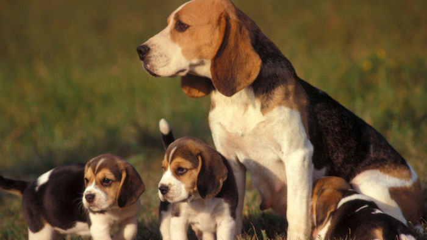

Rase pasa
Pas za vas
Jelena Savić
Kad je doberman iz dobrog legla i pravilno dresiran, on je pravi prijatelj i čuvar. Te inteligentne pse lako je dresirati i zato su često
deo vojnih ili policijskih jedinica. Oni vole svoje vlasnike, naročito one koji im omogućuju puno aktivnosti i pustolovina u prirodi. Njihova odanost ljudima ne svodi se samo na njihovog vlasnika (kao što ih bije glas), oni vole ljude uopšteno
i zato su kroz istoriju tako omiljeni.

Biglovi su i kod nas veoma popularni porodični psi. Svetsko udruženje uzgajivača pasa opisuje ih kao ‘izvanredne lovačke pse i lojalne prijatelje’. Kako su uzgajani za lov u čoporu, biglovi vole društvo i ljudi i drugih pasa.
Bigl će ‘pratiti svoj nos’ ma gde ga vodio, čak i kad mu naredite nešto drugo. No, oni se ipak tokom vremena jako povežu sa svojim ‘ljudskim čoporom’. Njima je uvek potrebno društvo, bilo ljudsko ili pseće. Uz minimalnu socijalizaciju biglove
ćete lako naučiti da budu nežni sa decom i drugim psima.
 Bokseri su odani, zaigrani kućni ljubimci, ali uz to i psi čuvari. Uživaju u kretanju i puno vežbe u prirodi. Oni su strpljivi i zaigrani sa decom, ali istovremeno i njihovi veliki zaštitnici pa su zbog toga omiljeni kao porodični
psi. Bez obzira što su ih kroz istoriju koristili i kao borbene pse, bokseri prirodno ne pokazuju agresivnu crtu i zaista su gotovo legendarno strpljivi i nežni sa decom. Manje poznata činjenica: beli bokseri nisu albino primerci, bela je
samo još jedna boja za boksere. Četvrtina svih štenaca boskera rađa se belo.
Bokseri su odani, zaigrani kućni ljubimci, ali uz to i psi čuvari. Uživaju u kretanju i puno vežbe u prirodi. Oni su strpljivi i zaigrani sa decom, ali istovremeno i njihovi veliki zaštitnici pa su zbog toga omiljeni kao porodični
psi. Bez obzira što su ih kroz istoriju koristili i kao borbene pse, bokseri prirodno ne pokazuju agresivnu crtu i zaista su gotovo legendarno strpljivi i nežni sa decom. Manje poznata činjenica: beli bokseri nisu albino primerci, bela je
samo još jedna boja za boksere. Četvrtina svih štenaca boskera rađa se belo.
 Gotovo svi znamo da su čivave sićušni psi velike ličnosti, ali taj inteligentni psić zaista je i odan prijatelj. Kako su puni želje da zadovolje vlasnika,
nije im potreban poseban trening. Oni su najsitnija pasmina, poneki teže ispod dva kilograma. Mogu se jako razlikovati po temperamentu, ali svi primeri ove pasmine posve su odani ljudima koje vole i gutaju njihovu pažnju. Neke čivave stekle
su reputaciju kao divlje i zločeste prema nepoznatm ljudima, no to je verovatno upravo posledica njihove silne odanosti svom vlasniku. Čivave treba podučiti da budu umereniji sa lajanjem. Potrebno im je umereno, ne naročito strogo, ali regularno
dresiranje.
Gotovo svi znamo da su čivave sićušni psi velike ličnosti, ali taj inteligentni psić zaista je i odan prijatelj. Kako su puni želje da zadovolje vlasnika,
nije im potreban poseban trening. Oni su najsitnija pasmina, poneki teže ispod dva kilograma. Mogu se jako razlikovati po temperamentu, ali svi primeri ove pasmine posve su odani ljudima koje vole i gutaju njihovu pažnju. Neke čivave stekle
su reputaciju kao divlje i zločeste prema nepoznatm ljudima, no to je verovatno upravo posledica njihove silne odanosti svom vlasniku. Čivave treba podučiti da budu umereniji sa lajanjem. Potrebno im je umereno, ne naročito strogo, ali regularno
dresiranje.
Jazavičari su odavno poznati ne samo kao jedna od najodanijih pasmina, već i najzabavnijih. Oni su živahni psi, prijateljski nastrojeni, s veoma izraženim čulom mirisa. Veoma su inteligentni pa im je često dosadno ako im se
vlasnik ne posvećuje dovoljno. Iako su zapravo nezavisni, pridružiće se rado svim aktivnostima svojoj ‘porodici’, vlasnika. Vole ih svi koji su upoznali njihov živahni karakter, inteligenciju, lovački instinkt i odanost ljudima s kojima žive.
Irski vučji hrt.je najviša pasmina na svetu, a ujedno i jedna od najodanijih – irski vučji hrt često ima blag i poslušan karakter. Sportski su psi premda ne treba im toliko treninga kao neke druge aktivne pasmine. Opisuju
ih kao odane i pouzdane porodične pse. Takođe, ovaj hrt duboko povezan sa “svojim” ljudima i želi da učestvuje u svakom aspektu života porodice. Iako su preveliki da se igraju s malom decom, izuzetno su strpljivi s njima. Nekima se čini da
ih je teško odgojiti – do dve godine se ponašaju poput štenadi pa im treba čvrst i uporan trening da nauče šta se sme, a šta ne.
Dugodlaki škotski ovčar, Koli, postao je poznat upravo kao odani prijatelj svojeg vlasnika. Ovi izvanredni ovčari koji mogu brzo da okupe stado ovaca i zaštite ga ako treba. Veoma su marljivi radni psi, ali vole vreme da provode
i u kući, okruženi članovima ljudske porodice, opušteni. Zaljubljenici u ove pse uvek ističu njihovu osetljivost, inteligenciju i odanost do smrti koja ide tako daleko da mogu čak i predosetiti šta je njihovom vlasniku potrebno. Savršeni su
kao prijatelji dece. Baš kao i filmski lik, Lesi, Koli će uvek priskočiti u pomoć ljudima, ali i drugim životinjama. Oni su blage naravi, prijateljski nastrojeni, ali ponekad sumnjičavi prema nepoznatima.
* Manje poznata činjenica: Gotovo svi pamtimo škotskog ovčara iz filma ‘Lesi se vraća kući’ (1943.). Ali, pravo ime ‘glumca’ iz tog filma bilo je Pal. U prvom trenutku producenti nisu želeli da ga uzmu za film jer nije bio ženka, ali
toliko ih je na kraju impresionirao svojom inteligencijom da su promenili mišljenje – i njegovom vlasniku platili dvostruko veći honorar nego devojčici, zvezdi u usponu, Elizabet Tejlor.
 Ako želite velikog i snažnog psa pirinejski pas je idealan. Ovu odanu vrstu opisuju rečima smiren, strpljiv, pametan, snažne volje, a opet
nežan. Pirinejski pas želi davati, davati i davati svoju ljubav. Ipak, treba čvrstu ruku, posebno jer u odrasloj dobi teži gotovo 50 kilograma, a pri obuci treba biti dosledan, strpljiv i s mnogo pozitivnih podsticaja. Dobro odgojen pirinejac
je hrabar, odan svojoj porodici i braniće je i životom ako treba. Voli decu.
Ako želite velikog i snažnog psa pirinejski pas je idealan. Ovu odanu vrstu opisuju rečima smiren, strpljiv, pametan, snažne volje, a opet
nežan. Pirinejski pas želi davati, davati i davati svoju ljubav. Ipak, treba čvrstu ruku, posebno jer u odrasloj dobi teži gotovo 50 kilograma, a pri obuci treba biti dosledan, strpljiv i s mnogo pozitivnih podsticaja. Dobro odgojen pirinejac
je hrabar, odan svojoj porodici i braniće je i životom ako treba. Voli decu.
* Manje poznata činjenica: Ovo je jedna od najstarijih rasa na svetu, u Pirineje su sa stočarima stigli 3000 godina pre Hrista, a postoji fosil velikog pirinejskog psa star 1800 godina!
3 najskuplje rase pasa na svetu
Samojedi su psi koje je odgojilo Samojedsko nomadsko pleme, koje živi u Sibiru. Oni su istorijski poznati kao psi čuvari irvasa. Uzgajani su i sa ciljem vuče sanki, baš kao i Sibirski Haski i druge slične vrste koje potiču
sa hladnijih podneblja. Iako nisu naročito veliki, snažni su i veoma takmičarski nastrojeni. Njihove osobine kontrolisanja i vođenja stada, po čemu su najbolja vrsta psa sa tačke gledišta mnogih stručnjaka, mogu se izgubiti u gradskim sredinama,
ali njihovo prijateljsko ponašanje lako osvaja srca. Morate znati da Samojedi vole da kopaju rupe kada im je dosadno. Iako laju na strance koji prolaze blizu njih, oni su ipak previše prijateljski nastrojeni da budu psi čuvari, tako da je
život unutar kuće ili stana najbolje rešenje za njih. Zanimljivost koja se vezuje za ovu rasu pasa je činjenica da njihova dlaka ima antialergijske osobine. U nekim delovima sveta, dlaka koja im otpadne se skuplja i koristi se kao alternativa
vuni za pravljenje rukavica i šalova.
Uprkos svom impresivnom imenu, faraonski pas zapravo nije egipatska rasa. Nacionalnost ovog psa je malteška. Ima mnogo toga što im ide u prilog,
počevši od prefinjenog izgleda i atletske dispozicije. Veoma su inteligentni. Takođe, imaju još jednu veoma simpatičnu osobinu – njuške i uši im pocrvene kada su ekstremno srećni ili uzbuđeni. Ova vrsta psa ima veoma kratku, crvenkastu dlaku
i šape, kao i brkove i njuške u odgovarajućoj boji. Mogu težiti i do 25 kg, pri čemu su mnogi od njih manji i mršaviji. Narav im je tvrdoglava i nezavisna, a njihovo dresiranje je često veoma težak izazov. Ipak, oni se sasvim dobro snalaze
sa zahtevima, ako uspete da probijete njihov čvrsti oklop.
Saluki, poznat kao Kraljevski pas Egipta, bio je verni pratilac čoveka još iz vremena faraona. Ovo je rasa psa koju su najčešće birali trgovci koji su se kretali kineskim putem svile, kao i antički lovci na zečeve i gazele.
Ova rasa psa je svakako jedna od najstarijih pripitomljenih vrsta, koje i dan danas postoje u svom čistom obliku. Dugački, visoki i mršavi psi, koji mogu težiti do 35 kg. Zbog svoje nezavisnosti i povučenosti, možda nisu dobra rasa za ljude
koji se prvi put upuštaju u kupovinu kućnog ljubimca. Njima je potrebno dosta kretanja i jurnjave.
„Ako mogu da budem upola dobra osoba koliko je moj pas, onda bih bio duplo bolji čovek.“
Charles Yu